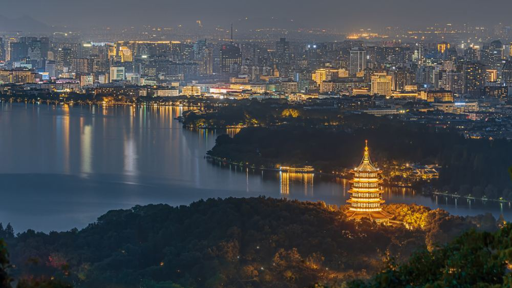
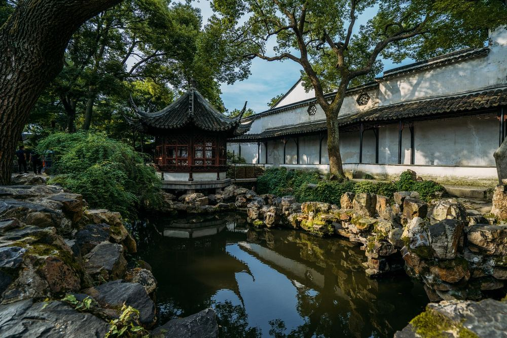
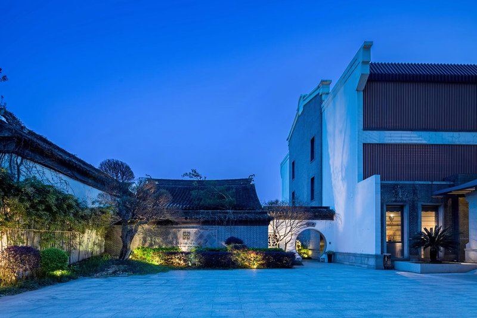
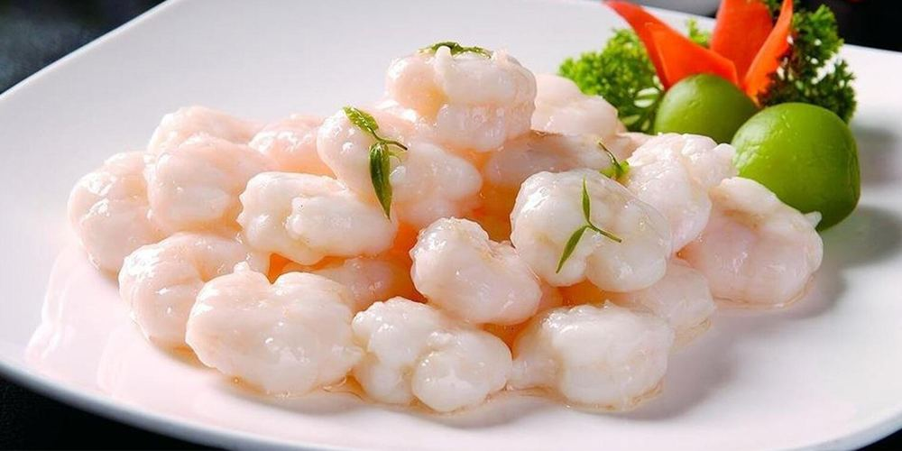
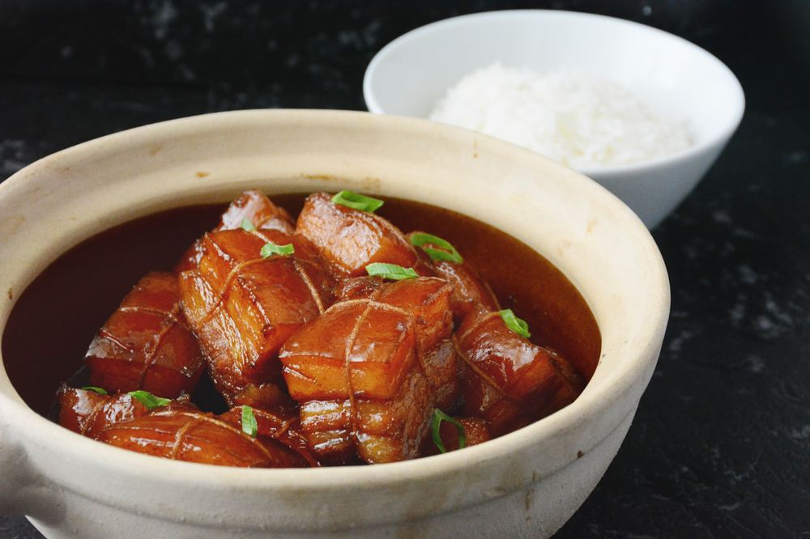
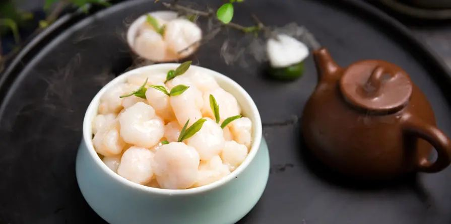
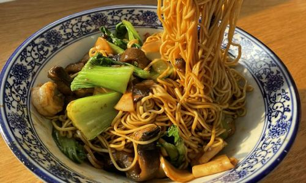
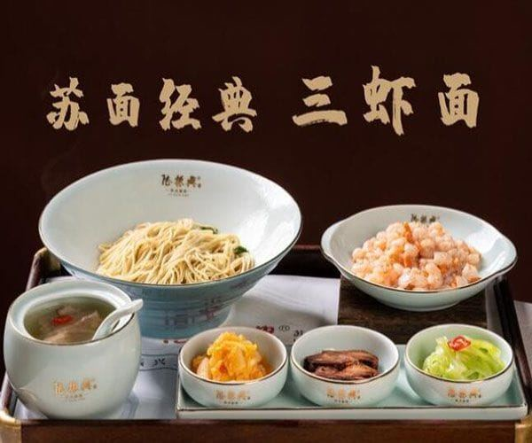

行程總覽
去程 1/18 國航 CA150
桃園 12:30 → 杭州蕭山 14:30
回程 1/22 長榮 BR771
杭州蕭山 19:35 → 桃園 21:30
均含托運行李 23kg
杭州・梅苑悅享酒店（湖濱／延安路）
住 3 晚：1/18、1/19、1/21
蘇州・平江華府酒店（平江路旁）
住 1 晚：1/20
1/20 高鐵 杭州東 → 蘇州站 11:00
1/21 高鐵 蘇州站 → 杭州東 15:00
二等座約 ¥73，Trip.com 提前買
市區移動以滴滴＋地鐵為主
| 日期 | 主題 | 住宿 |
|---|---|---|
| Day 1｜1/18（一） | 抵達杭州，西湖邊散步、樓外樓晚餐 | 杭州・梅苑悅享 |
| Day 2｜1/19（二） | 西湖一整天：斷橋白堤蘇堤、靈隱寺、雷峰塔夜景 | 杭州・梅苑悅享 |
| Day 3｜1/20（三） | 高鐵到蘇州：拙政園、平江路夜景、松鶴樓 | 蘇州・平江華府 |
| Day 4｜1/21（四） | 山塘街遊船、觀前街得月樓，下午高鐵回杭州 | 杭州・梅苑悅享 |
| Day 5｜1/22（五） | 南宋御街買伴手禮，晚上飛回台灣 | — |
每日行程
1/18（一）台北 → 杭州：到杭州慢慢來
| 10:30 | 到桃園機場 | 機捷或計程車 |
| 12:30–14:30 | 飛杭州（國航 CA150） | — |
| 14:30–15:10 | 蕭山機場出關、拿行李 | 步行 |
| 15:10–15:50 | 機場 → 杭州飯店 | 滴滴快車約 40 分鐘、¥100–120（交通比較見下方「交通方式」） |
| 16:00 | 飯店 Check-in，放行李休息 | — |
| 17:30–19:00 | 西湖邊散步看夕陽 | 步行，飯店 8 分鐘到湖濱 |
| 19:00–20:30 | 晚餐：樓外樓（孤山路店） | 步行；西湖邊百年老字號，東坡肉、西湖醋魚、龍井蝦仁，2 人 3 道約 ¥350–400，平日 17:00 到免排隊 |
1/19（二）杭州一整天：只玩西湖
| 09:30 | 飯店早餐 | 飯店內 |
| 10:30–13:00 | 西湖：斷橋、白堤、蘇堤慢慢逛 | 步行＋湖邊租腳踏車 |
| 13:00–14:00 | 午餐：知味觀（鮮肉小籠、貓耳朵、片兒川，人均 ¥40–70）＋茶館休息 | 步行 |
| 14:00–14:30 | 前往靈隱寺 | 滴滴快車 15–20 分鐘、約 ¥20 |
| 14:30–16:30 | 靈隱寺＋飛來峰，逛 1.5–2 小時就好，不用爬山 | 步行 |
| 16:30–17:00 | 回湖濱 | 滴滴快車約 20 分鐘 |
| 17:30–19:00 | 雷峰塔看亮燈、西湖夜景 | 步行 |
| 19:00–20:30 | 晚餐：河坊街奎元館・蝦爆鱔麵（約 ¥45–58），再吃定勝糕、蔥包檜 | 步行 |

杭州最有名的古寺，飛來峰石窟就在旁邊，預留 1.5–2 小時。

傍晚亮燈後最漂亮，配西湖夜景一起看。

斷橋、白堤、蘇堤一路慢慢走，1 月的西湖清冷人少，別有一番味道。
1/20（三）杭州 → 蘇州：園林與平江路
| 09:30 | 飯店早餐、退房，行李寄杭州飯店 | 飯店櫃檯 |
| 10:30–10:55 | 飯店 → 杭州東站 | 滴滴快車 25 分鐘、約 ¥35（提早 30 分鐘到站） |
| 11:00–12:10 | 高鐵 杭州東 → 蘇州站 | G 字頭二等座，約 1 小時 10 分、¥73 |
| 12:10–12:30 | 蘇州站 → 蘇州飯店 | 滴滴快車 20 分鐘、約 ¥30 |
| 12:30 | 飯店 Check-in，放行李 | — |
| 14:00–15:00 | 午餐：平江路蘇州麵（同得興／裕興記，三蝦麵、楓鎮大肉麵） | 步行 |
| 15:30–17:30 | 拙政園，逛 2 小時 | 步行，飯店約 10–15 分鐘到 |
| 18:00–19:00 | 回飯店休息 | 步行 |
| 19:00–20:30 | 晚餐：松鶴樓（觀前街店）・松鼠桂魚＋響油鱔糊、蟹粉豆腐，2 人約 ¥400–550 | 步行 |
| 20:30–21:30 | 平江路夜景散步 | 步行，飯店就在平江路旁 |

中國四大名園之一，池塘、亭台、迴廊一步一景，蘇州園林的代表作。

蘇州保存最完整的古街，水巷人家，晚上亮燈後最有味道。

住 1/20 一晚，平江路旁，步行 100 公尺進老街、15 分鐘到拙政園。
1/21（四）蘇州早上玩，下午回杭州
| 09:30 | 飯店早餐、退房，行李寄飯店 | 飯店櫃檯 |
| 10:30–12:00 | 山塘街，坐船 30 分鐘看水巷 | 滴滴快車 15 分鐘、約 ¥20；街內步行＋遊船 |
| 12:15–13:15 | 午餐：得月樓（觀前街）・碧螺蝦仁＋蟹粉豆腐；順路買黃天源糕團、吃啞巴生煎當點心 | 滴滴或步行 |
| 13:30–14:00 | 回飯店拿行李 | 滴滴快車 |
| 14:00–14:20 | 飯店 → 蘇州站 | 滴滴快車 20 分鐘 |
| 15:00–16:00 | 高鐵 蘇州站 → 杭州東站 | 二等座，約 1 小時、¥73 |
| 16:00–16:30 | 杭州東 → 杭州飯店 | 滴滴快車 25 分鐘 |
| 18:30–21:00 | 西湖最後一晚：湖濱銀泰 in77 逛街 | 步行 |
「七里山塘」水鄉老街，坐船 30 分鐘看兩岸人家。

用蘇州碧螺春茶葉炒蝦仁，茶香清雅，得月樓的招牌菜。
Day 3 晚餐的主菜：鱖魚現炸澆酸甜滷汁，外脆內嫩。
1/22（五）杭州最後半天，晚上飛回台灣
| 09:30 | 飯店早餐 | 飯店內 |
| 10:30–12:30 | 南宋御街／湖濱買伴手禮：龍井茶葉、藕粉、采芝齋松子糖 | 步行 |
| 13:00–16:30 | 回飯店午餐、整理行李、休息 | 飯店內 |
| 17:00–17:40 | 飯店 → 蕭山機場 | 滴滴快車約 40 分鐘、¥100–120，19:35 班機建議 17:00 前出發 |
| 19:35–21:30 | 飛回桃園（長榮 BR771） | — |
附近遊玩
🏨 以杭州・梅苑悅享酒店（湖濱）為中心
步行 8–10 分鐘｜免費｜隨到隨逛，晨景與黃昏最美，建議停留 1–3 小時。
打車約 20 分鐘｜建議一早或下午去避人潮，停留 1.5–2 小時；回程車較難叫，可預留叫車時間。
打車約 15 分鐘｜傍晚亮燈最美，可登塔看西湖全景，停留約 1 小時。
步行約 20 分鐘或地鐵 7 號線吳山廣場站｜老街小吃與伴手禮集中地，奎元館、定勝糕都在這，停留 1–2 小時。
步行約 15 分鐘或地鐵 1 號線武林廣場站｜晚上才熱鬧，小吃、文創攤位，晚餐後散步剛好。
地鐵 5 號線大運河站｜運河邊老街與博物館群，時間多再去，停留半天；本行程排不下可當備案。
🏨 以蘇州・平江華府酒店（平江路）為中心
步行 10–15 分鐘｜中國四大名園之首，建議停留 2 小時；旺季門票先在線上買好。
出門就到｜免費｜白天逛小店、晚上看燈影，評彈茶館值得坐下來聽一場。
打車約 15 分鐘或地鐵 2 號線山塘街站｜遊船 30 分鐘看水巷，停留 1.5–2 小時。
步行約 10 分鐘｜貝聿銘設計，免費但必須提前在官方管道預約，沒預約進不去；與拙政園、獅子林同一區一起逛。
步行約 12 分鐘｜假山迷宮聞名，與拙政園相鄰，停留約 1 小時，兩園可排同一個半天。
步行約 10 分鐘｜觀前街是老城商圈，松鶴樓、得月樓、黃天源都在這；雙塔市集是網紅菜市場，小吃便宜好吃。
交通方式
✈️ 蕭山機場 → 杭州飯店（湖濱）
| 方式 | 路線 | 時間 | 費用 |
|---|---|---|---|
| 滴滴／計程車（推薦） | 機場直達飯店，約 30 公里 | 45–60 分鐘 | 約 ¥100–160 |
| 地鐵 19 號線＋1 號線 | 蕭山機場站 →（19 號線機場快線）→ 西湖文化廣場換 1 號線 → 龍翔橋站，步行到飯店 | 約 50–60 分鐘 | 約 ¥7–9 |
| 地鐵 1 號線直達 | 蕭山機場站 → 龍翔橋站，不用換乘但站站停 | 約 65–70 分鐘 | 約 ¥7 |
🚄 杭州 ↔ 蘇州（高鐵）
- 去程 1/20 11:00 杭州東站 → 蘇州站，回程 1/21 15:00 蘇州站 → 杭州東站，G 字頭二等座約 ¥73，車程約 1–1.2 小時。
- 買票：Trip.com 提前買好，用護照資料訂票、進站刷護照；建議提早 30 分鐘到站。
- 選站重點：一定選「蘇州站」，離平江路打車只要約 20 分鐘；「蘇州北站」在相城區，離老城遠得多，不要買錯。
- 飯店 ↔ 車站：杭州飯店到杭州東站滴滴約 25 分鐘（¥35）；蘇州站到平江路飯店滴滴約 20 分鐘（¥30），也可以搭地鐵 4 號線轉 1 號線到相門站／臨頓路站，出站沿干將路步行約 400 公尺到平江路。
🚕 兩地市區交通
- 杭州：飯店旁就是地鐵 1 號線龍翔橋站，去杭州東站、武林廣場都直達；景點之間以滴滴為主，西湖周邊假日容易塞車，短程步行反而快。
- 蘇州：住平江路的最大優勢是「用走的」——拙政園、蘇博、獅子林、觀前街都在步行 10–15 分鐘內；去山塘街搭地鐵 2 號線或打車約 15 分鐘；拙政園也可搭地鐵 6 號線到「拙政園蘇博站」。
- 回程 1/22：飯店 → 蕭山機場，滴滴約 40 分鐘（¥100–120），19:35 的班機建議 17:00 前出發；地鐵要先到杭州東站再轉 19 號線，不建議拖行李這樣繞。
美食照片牆

樓外樓招牌，約 ¥30／塊，肥而不膩。

杭州菜代表，約 ¥108／條，酸甜芡汁。

西湖龍井茶葉炒蝦仁，約 ¥128–158，清香淡雅。

一籠約 ¥22–28，杭州人從小吃到大的味道。

約 ¥45–58，鱔魚現爆現澆、蝦仁彈嫩。

蘇州麵的代表，蝦仁、蝦腦、蝦籽三鮮合一。
松鶴樓招牌，Day 3 晚餐主菜。
得月樓招牌，Day 4 中午在蘇州吃。
杭州住 3 晚，湖濱／延安路，步行 8 分鐘到西湖。
出發前清單
- 天氣：1 月的杭州、蘇州約 0–8°C，湖邊風大，羽絨外套、圍巾、手套必帶；室內多半有暖氣，採洋蔥式穿法。
- 必先預約／買好：蘇州博物館（免費但要預約）、拙政園門票、兩段高鐵票（Trip.com）、靈隱寺門票可線上買。
- 支付與網路：支付寶／微信支付先綁好卡，滴滴出行 App 先裝好並註冊；中國境內地圖用高德，Google 地圖不準。
- 證件：高鐵進站、飯店入住都要護照正本，隨身帶著，不要放托運行李。
- 伴手禮：龍井茶葉、藕粉、采芝齋糖果在 Day 5 上午一次買齊，避免前幾天提著逛。